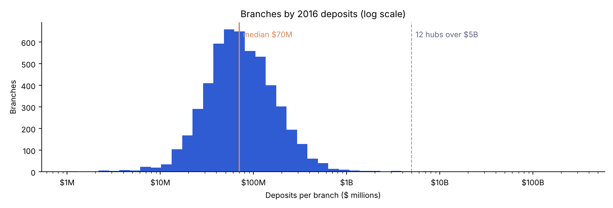
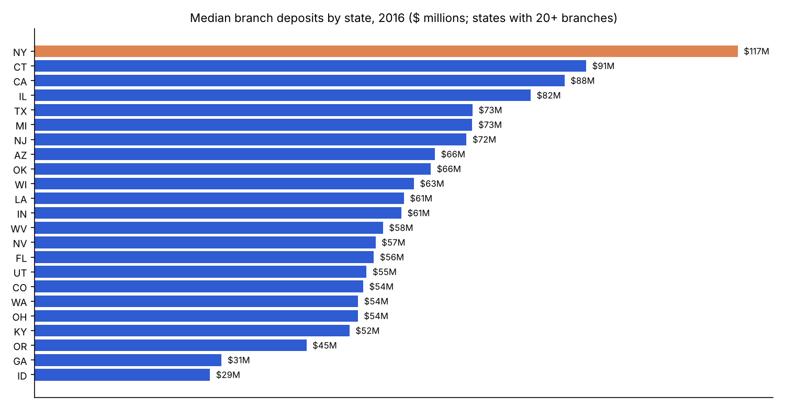
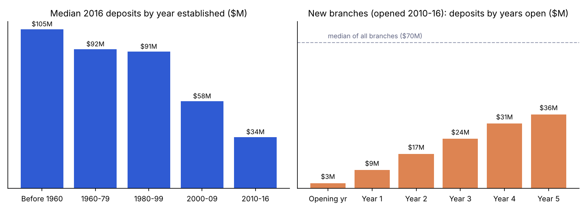

Chase Branch Deposits Analysis, 2010–2016
A branch-level analysis of deposit growth, concentration and branch maturity across JPMorgan Chase's U.S. network. Built in Python and Excel on the Chase Bank Branch Deposits Kaggle dataset (5,413 branches, deposits for 2010–2016).
01. Question
Where do Chase's deposits sit, and what makes a branch big?
Using seven years of branch-level data, this project measures how fast Chase's branch deposits grew, how concentrated they are, and how much a branch's size depends on where it is, how old it is, and which bank it originally came from. The unit of analysis is one branch; the main measure is total deposits per branch per year.
02. Data cleaning
From 5,413 rows to 5,412 branches
- Treated blank deposit cells as no deposits that year. Blanks fall from 740 in 2010 to 0 in 2016 as new branches open.
- Removed the Columbus, OH main office. It reports $1,155B in 2016, roughly equal to every other branch combined, so keeping it would double count the network.
- Parsed established and acquired dates to years, to group branches by age and by origin (Bank One in 2004, Washington Mutual in 2008).
- Defined an active branch as one reporting deposits above zero in a year. 142 offices report zero in 2016; medians use active branches only.
- Kept deposits in the file's unit, thousands of dollars (the FDIC Summary of Deposits convention), and converted to $M and $B only for reporting.
03. Network growth
Deposits nearly doubled in six years
Total branch deposits rose every year, from $614B to $1,155B. The branch count grew only about 16%, so most of the gain came from existing branches getting bigger: branches open in both 2010 and 2016 grew 81.6% in total, and the median branch went from $44.7M to $69.9M.

04. Concentration
A dozen hub offices hold half the money
Most branches hold between $25M and $150M, but the distribution has a very long right tail. 12 downtown offices with more than $5B each hold 49.8% of all branch deposits, and the top 10% of branches hold 68.7%. These hubs book large corporate and institutional deposits, so the median is the fairer measure of a typical branch.

| Largest offices, 2016 | City | State | Deposits |
|---|---|---|---|
| Madison and 48th St Branch | New York City | NY | $313.7B |
| Madison Ave Abd 48th St Branch | New York City | NY | $69.0B |
| Houston Main Office | Houston | TX | $57.8B |
| Chicago's Main Office Branch | Chicago | IL | $36.5B |
| Dallas Main Banking Center Branch | Dallas | TX | $25.4B |
05. Geography
Typical branch size varies widely by state
New York leads on total deposits because of its Midtown hubs, and also has the largest median branch. California has the most branches. Same branch growth was strongest in fast growing Sun Belt markets such as Florida, Georgia and Nevada.

| State | Branches | Total $B | Median $M | Same branch growth |
|---|---|---|---|---|
| NY | 742 | 536.8 | 116.6 | +88% |
| TX | 616 | 151.4 | 72.6 | +89% |
| CA | 1,001 | 119.0 | 87.9 | +79% |
| IL | 359 | 84.4 | 82.3 | +74% |
| MI | 237 | 42.0 | 72.6 | +103% |
| AZ | 253 | 30.1 | 66.4 | +61% |
| FL | 391 | 28.8 | 56.3 | +112% |
| OH | 273 | 28.4 | 53.6 | +63% |
| NJ | 211 | 19.2 | 71.6 | +93% |
| IN | 174 | 17.9 | 60.8 | +43% |
| LA | 147 | 17.6 | 61.3 | +29% |
| WA | 203 | 15.2 | 53.6 | +64% |
Top 12 states by total deposits. The full table for all 23 states is in the script's output.
06. Branch age
Deposits take years to build
Branches opened before 1960 have a median of $106M, three times the $34M of branches opened in 2010–16. Following new branches year by year shows why: a branch opens with about $3M and is still at $36M after five years, roughly half the network median.
| Origin | Branches | Median $M |
|---|---|---|
| No acquisition listed | 1,585 | 45.6 |
| Washington Mutual (2008) | 1,528 | 82.4 |
| Bank One (2004) | 1,527 | 73.8 |
| Other acquisitions | 630 | 126.2 |

07. Findings
What the data says
- Growth came from existing branches. Deposits grew 88% while the branch count grew about 16%; same branch growth alone was 82%.
- Totals hide the typical branch. 12 hub offices hold 50% of deposits, so medians, not averages, describe a normal branch.
- Branch maturity matters most. Older branches hold far more, and new branches need well over five years to reach the network median.
- Acquisitions built the network. About seven in ten active branches came from Bank One, Washington Mutual or other deals.
- Limits. The data ends in 2016, before Chase's retail expansion into Massachusetts and other new states. Deposits are booked by office, so hub figures include business that isn't walk in branch activity.
08. Code
Full Python script
pandas, NumPy and matplotlib. Run with python chase_branch_deposits.py database.csv; it writes the four charts and a results.json with every number on this page.
"""
Chase Branch Deposits Analysis, 2010-2016
Dataset: "Chase Bank Branch Deposits, 2010-2016" (Kaggle, chasebank/bank-deposits) -> database.csv
Question: Where do JPMorgan Chase's branch deposits sit, how fast did they grow,
and what separates a large branch from a small one?
Deposits are reported in thousands of dollars (FDIC Summary of Deposits convention).
Run: python chase_branch_deposits.py database.csv [output_folder]
Needs: pandas, numpy, matplotlib
"""
import json
import sys
from pathlib import Path
import matplotlib
matplotlib.use("Agg")
import matplotlib.pyplot as plt
import matplotlib.ticker
import numpy as np
import pandas as pd
CSV = sys.argv[1] if len(sys.argv) > 1 else "database.csv"
OUT = Path(sys.argv[2]) if len(sys.argv) > 2 else Path("output")
OUT.mkdir(parents=True, exist_ok=True)
YEARS = list(range(2010, 2017))
DEP = [f"{y} Deposits" for y in YEARS]
HUB = 5_000_000 # $5B in thousands: downtown offices that book corporate deposits
BLUE, ORANGE, GREY = "#2f5bd3", "#dd8452", "#9aa0b4"
plt.rcParams.update({"font.size": 9, "axes.spines.top": False, "axes.spines.right": False})
results = {}
# ---------------------------------------------------------------- 1. Load
raw = pd.read_csv(CSV)
results["raw_shape"] = list(raw.shape)
results["missing_deposits"] = {c: int(raw[c].isna().sum()) for c in DEP}
# ---------------------------------------------------------------- 2. Clean
df = raw.copy()
df[DEP] = df[DEP].fillna(0) # blank = no deposits reported that year
df["est_year"] = pd.to_datetime(df["Established Date"], format="%m/%d/%Y").dt.year
df["acq_year"] = pd.to_datetime(df["Acquired Date"], format="%m/%d/%Y", errors="coerce").dt.year
main = df[df["Main Office"] == 1]
results["main_office_2016_b"] = round(main["2016 Deposits"].sum() / 1e6, 1)
br = df[df["Main Office"] == 0].copy() # main office ~ equals all branches combined
active = br[br["2016 Deposits"] > 0].copy()
results["branches_after_cleaning"] = len(br)
results["zero_2016"] = int((br["2016 Deposits"] == 0).sum())
# ---------------------------------------------------------------- 3. Network growth
by_year = pd.DataFrame({
"total_b": [br[c].sum() / 1e6 for c in DEP],
"active": [(br[c] > 0).sum() for c in DEP],
"median_m": [br.loc[br[c] > 0, c].median() / 1e3 for c in DEP],
}, index=YEARS)
t10, t16 = by_year.total_b.iloc[0], by_year.total_b.iloc[-1]
both = br[(br["2010 Deposits"] > 0) & (br["2016 Deposits"] > 0)]
results["growth"] = {
"total_2010_b": round(t10, 1), "total_2016_b": round(t16, 1),
"growth_pct": round((t16 / t10 - 1) * 100, 1),
"cagr_pct": round(((t16 / t10) ** (1 / 6) - 1) * 100, 1),
"active_2010": int(by_year.active.iloc[0]), "active_2016": int(by_year.active.iloc[-1]),
"median_2010_m": round(by_year.median_m.iloc[0], 1), "median_2016_m": round(by_year.median_m.iloc[-1], 1),
"same_branch_growth_pct": round((both["2016 Deposits"].sum() / both["2010 Deposits"].sum() - 1) * 100, 1),
"same_branch_n": len(both),
}
results["by_year"] = by_year.round(1).reset_index(names="year").to_dict("records")
fig, ax = plt.subplots(1, 2, figsize=(10, 3.6))
ax[0].bar([str(y) for y in YEARS], by_year.total_b, color=BLUE)
for i, v in enumerate(by_year.total_b):
ax[0].text(i, v + 15, f"${v:,.0f}B", ha="center", fontsize=8)
ax[0].set(title="Total branch deposits ($ billions)")
ax[0].set_yticks([])
ax[1].plot([str(y) for y in YEARS], by_year.median_m, marker="o", color=ORANGE, lw=2)
for i, v in enumerate(by_year.median_m):
ax[1].text(i, v + 1.2, f"${v:.1f}M", ha="center", fontsize=8)
ax[1].set(title="Median deposits per branch ($ millions)", ylim=(35, 78))
fig.tight_layout(); fig.savefig(OUT / "fig1_growth.png", dpi=150); plt.close(fig)
# ---------------------------------------------------------------- 4. Concentration
s16 = active["2016 Deposits"].sort_values(ascending=False)
hubs = s16[s16 > HUB]
results["concentration"] = {
"hub_count": len(hubs), "hub_share_pct": round(hubs.sum() / s16.sum() * 100, 1),
"top10pct_share_pct": round(s16.head(len(s16) // 10).sum() / s16.sum() * 100, 1),
"largest_hubs": [{"branch": r["Branch Name"], "city": r.City, "state": r.State,
"deposits_b": round(r["2016 Deposits"] / 1e6, 1)}
for _, r in active.nlargest(5, "2016 Deposits").iterrows()],
}
fig, ax = plt.subplots(figsize=(10, 3.4))
bins = np.logspace(np.log10(1), np.log10(s16.max() / 1e3), 50)
ax.hist(s16 / 1e3, bins=bins, color=BLUE)
ax.set_xscale("log")
ax.xaxis.set_major_formatter(matplotlib.ticker.FuncFormatter(lambda v, _: f"${v:,.0f}M" if v < 1000 else f"${v/1000:,.0f}B"))
ax.axvline(s16.median() / 1e3, color=ORANGE, lw=1.5)
ax.text(s16.median() / 1e3 * 1.1, ax.get_ylim()[1] * .9, f"median ${s16.median()/1e3:.0f}M", color=ORANGE)
ax.axvline(HUB / 1e3, color=GREY, lw=1, ls="--")
ax.text(HUB / 1e3 * 1.1, ax.get_ylim()[1] * .9, f"{len(hubs)} hubs over $5B", color="#5d6280")
ax.set(title="Branches by 2016 deposits (log scale)", xlabel="Deposits per branch ($ millions)", ylabel="Branches")
fig.tight_layout(); fig.savefig(OUT / "fig2_distribution.png", dpi=150); plt.close(fig)
# ---------------------------------------------------------------- 5. States
g = active.groupby("State")["2016 Deposits"]
st = pd.DataFrame({"branches": g.size(), "total_b": g.sum() / 1e6, "median_m": g.median() / 1e3})
sg = both.groupby("State")[["2010 Deposits", "2016 Deposits"]].sum()
st["same_branch_growth_pct"] = (sg["2016 Deposits"] / sg["2010 Deposits"] - 1) * 100
st = st.sort_values("total_b", ascending=False)
results["states"] = st.round(1).reset_index().to_dict("records")
big = st[st.branches >= 20].sort_values("median_m")
fig, ax = plt.subplots(figsize=(10, 5.2))
ax.barh(big.index, big.median_m, color=[ORANGE if s == "NY" else BLUE for s in big.index])
for i, v in enumerate(big.median_m):
ax.text(v + 1, i, f"${v:.0f}M", va="center", fontsize=8)
ax.set(title="Median branch deposits by state, 2016 ($ millions; states with 20+ branches)")
ax.set_xticks([])
fig.tight_layout(); fig.savefig(OUT / "fig3_states.png", dpi=150); plt.close(fig)
# ---------------------------------------------------------------- 6. Branch age and ramp-up
cohorts = pd.cut(active.est_year, [0, 1959, 1979, 1999, 2009, 2016],
labels=["Before 1960", "1960-79", "1980-99", "2000-09", "2010-16"])
age = active.groupby(cohorts, observed=True)["2016 Deposits"].agg(["size", "median"])
age["median"] = age["median"] / 1e3
results["age"] = age.round(1).reset_index(names="cohort").rename(columns={"size": "branches", "median": "median_m"}).to_dict("records")
new = br[br.est_year >= 2010]
ramp = []
for k in range(6):
vals = [r[f"{r.est_year + k} Deposits"] for _, r in new.iterrows()
if r.est_year + k <= 2016 and r[f"{r.est_year + k} Deposits"] > 0]
if len(vals) >= 30:
ramp.append({"years_open": k, "branches": len(vals), "median_m": round(np.median(vals) / 1e3, 1)})
results["ramp"] = ramp
fig, ax = plt.subplots(1, 2, figsize=(10, 3.6))
ax[0].bar(age.index.astype(str), age["median"], color=BLUE)
for i, v in enumerate(age["median"]):
ax[0].text(i, v + 2, f"${v:.0f}M", ha="center", fontsize=8)
ax[0].set(title="Median 2016 deposits by year established ($M)")
ax[0].set_yticks([])
labels = ["Opening yr"] + [f"Year {r['years_open']}" for r in ramp[1:]]
ax[1].bar(labels, [r["median_m"] for r in ramp], color=ORANGE)
ax[1].axhline(results["growth"]["median_2016_m"], color=GREY, ls="--", lw=1)
ax[1].text(0, results["growth"]["median_2016_m"] + 2, f"median of all branches (${results['growth']['median_2016_m']:.0f}M)", color="#5d6280", fontsize=8)
for i, r in enumerate(ramp):
ax[1].text(i, r["median_m"] + 2, f"${r['median_m']:.0f}M", ha="center", fontsize=8)
ax[1].set(title="New branches (opened 2010-16): deposits by years open ($M)", ylim=(0, 80))
ax[1].set_yticks([])
fig.tight_layout(); fig.savefig(OUT / "fig4_age_ramp.png", dpi=150); plt.close(fig)
# ---------------------------------------------------------------- 7. Origin (acquisitions)
def origin(y):
if pd.isna(y): return "No acquisition listed"
return {2004: "Bank One (2004)", 2008: "Washington Mutual (2008)"}.get(int(y), "Other acquisitions")
og = active.assign(origin=active.acq_year.map(origin)).groupby("origin")["2016 Deposits"]
results["origin"] = (pd.DataFrame({"branches": og.size(), "total_b": og.sum() / 1e6, "median_m": og.median() / 1e3})
.sort_values("branches", ascending=False).round(1).reset_index().to_dict("records"))
# ---------------------------------------------------------------- 8. Standout branches
retail = active[active["2016 Deposits"] <= HUB]
results["top_retail"] = [{"branch": r["Branch Name"], "city": r.City, "state": r.State,
"deposits_m": round(r["2016 Deposits"] / 1e3)}
for _, r in retail.nlargest(10, "2016 Deposits").iterrows()]
fg = both[both["2010 Deposits"] >= 25_000].copy()
fg["growth_pct"] = (fg["2016 Deposits"] / fg["2010 Deposits"] - 1) * 100
results["fastest"] = [{"branch": r["Branch Name"], "state": r.State, "d2010_m": round(r["2010 Deposits"] / 1e3),
"d2016_m": round(r["2016 Deposits"] / 1e3), "growth_pct": round(r.growth_pct)}
for _, r in fg.nlargest(10, "growth_pct").iterrows()]
# ---------------------------------------------------------------- 9. Report
(OUT / "results.json").write_text(json.dumps(results, indent=2, default=float))
g = results["growth"]
print(f"Branches: {results['raw_shape'][0]} rows -> {results['branches_after_cleaning']} after removing the main office")
print(f"Deposits: ${g['total_2010_b']:,.1f}B (2010) -> ${g['total_2016_b']:,.1f}B (2016), "
f"+{g['growth_pct']}% ({g['cagr_pct']}% a year)")
print(f"Median branch: ${g['median_2010_m']}M -> ${g['median_2016_m']}M | same-branch growth +{g['same_branch_growth_pct']}%")
print(f"Hubs over $5B: {results['concentration']['hub_count']} holding {results['concentration']['hub_share_pct']}% of deposits")
print(st.round(1).head(10).to_string())